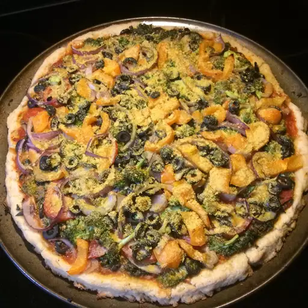

return to home
Veggie Pizza

Description
Bursting with rich aroma of herbs & spices and flavours, pizza is one of the most loved dishes of Italian cuisine. This pizza recipe is made with the combination of delicious vegetables like broccoli, onion, capsicum, carrot, mushroom and cauliflower along with tomatoes, pizza sauce, and goat cheese.
Vegetable Pizza is undoubtedly one of the easiest recipes that you can prepare for your family and friends on occasions like kitty party, game night, and even pot luck. If your kids hate eating vegetables, then you certainly should attempt at making this mouth-watering pizza and they will chew down
on the green vegetables without any fuss. Cheesy and delectable, this dish is best enjoyed with tomato ketchup. You can add your own spices and herbs to bring more flavours to the pizza. So, don't wait much and try this easy recipe today for your loved ones!
Ingredients
- 2 (8 ounce) packages refrigerated crescent rolls
- 1 cup sour cream
- 1 (8 ounce) package cream cheese, softened
- 1 (1 ounce) package ranch seasoning mix
- 1 teaspoon dried dill weed
- ¼ teaspoon garlic salt
- 1 ½ cups chopped fresh broccoli
- ½ cup halved and thinly-sliced radishes
- 1 small onion, finely chopped
- 1 red bell pepper, chopped
- 1 carrot, grated
- 1 stalk celery, thinly sliced
Steps
- Preheat the oven to 350 degrees F (175 degrees C). Spray a jelly roll pan with nonstick cooking spray.
- Press crescent roll dough into the prepared jelly roll pan to form a crust. Let stand 5 minutes. Pierce with a fork.
- Bake in the preheated oven until dough is fully cooked and golden brown, about 10 minutes. Let cool completely.
- Combine sour cream, cream cheese, ranch seasoning mix, dill, and garlic salt in a medium mixing bowl. Spread the cream cheese mixture on top of cooled crust. Arrange broccoli, radish, onion, bell pepper, carrot, and celery on top of the cream cheese mixture.
- Cover and let chill, 1 to 2 hours. Cut chilled pizza into 16 squares to serve.